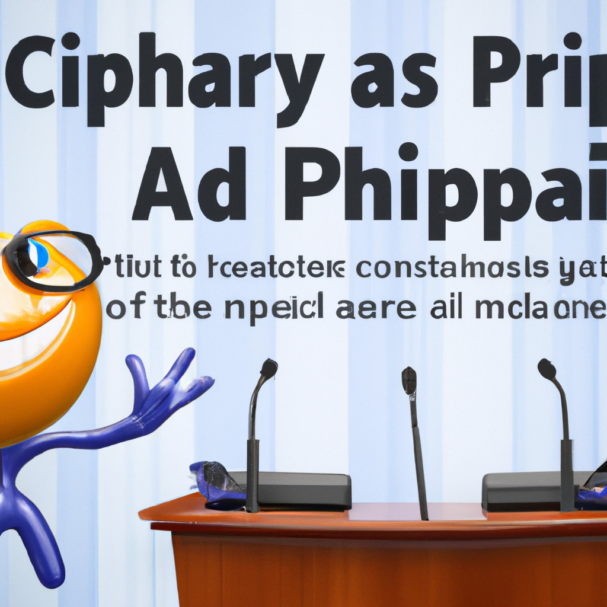

Microsoft Clippy Announces Run for Presidency
In a surprising turn of events, Microsoft's iconic virtual assistant, Clippy, has announced its bid for the United States presidency. The announcement was made during a virtual press conference held by Microsoft earlier today.
Clippy, originally introduced in 1996 as a part of Microsoft Office, became a symbol of the tech giant's push towards user-friendly software. Despite being discontinued in 2007, Clippy has maintained a strong following and a cult status among tech enthusiasts.
A Digital Revolution
As an AI-based candidate, Clippy represents a significant departure from traditional human politicians. Microsoft has developed an advanced version of Clippy, powered by their latest artificial intelligence technology. This new iteration is designed to process vast amounts of data and make informed decisions based on the best interests of the American people.
Microsoft's CEO, in the press conference, emphasized that Clippy's campaign would focus on the potential of technology to solve the nation's most pressing issues. They assured the public that Clippy's decision-making abilities would be transparent and open to scrutiny, maintaining the democratic values of the United States.
The Road Ahead
Clippy's entry into the political arena has ignited debates about the role of artificial intelligence in governance. While some view this development as a step forward in leveraging technology for the greater good, others express concerns about the ethical implications of an AI-based leader.
As the campaign gains momentum, it remains to be seen how the American public will respond to Clippy's run for the presidency. Will this bold move usher in a new era of technology-driven leadership, or will it raise more questions about the relationship between humanity and artificial intelligence?